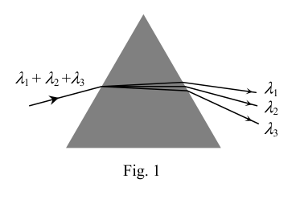
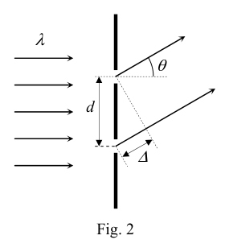
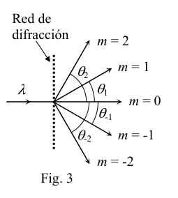
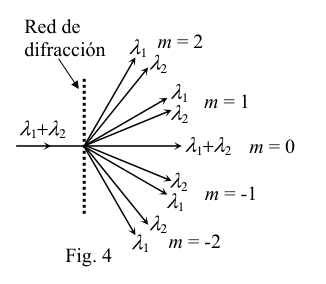
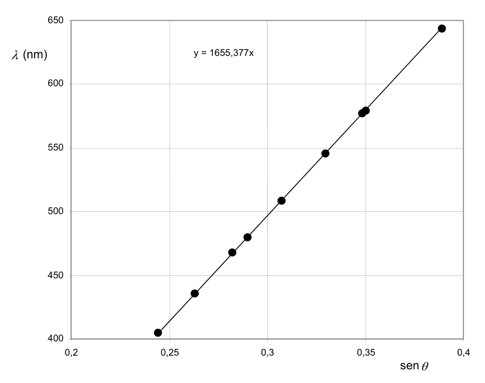

P3 Espectroscopia con red de difracción.
- Fundamento teórico Como sabrás, cada especie atómica puede absorber y emitir luz de una serie de longitudes de onda (espectros atómicos de absorción y emisión), relacionadas con las transiciones de los átomos entre sus diversos niveles de energía. Los instrumentos de observación y medida de estos espectros se conocen como espectroscopios, uno de cuyos componentes esenciales es el elemento dispersor. Cuando sobre él incide un haz de luz policromática (de varias longitudes de onda), lo divide en varios haces monocromáticos, uno para cada longitud de onda, que viajan en direcciones diferentes. Para este fin puede emplearse un prisma de vidrio, como se esquematiza en la figura 1, pero en este problema se va a usar como elemento dispersor una red de difracción. En esencia, una red de difracción puede describirse como un gran número de rendijas muy estrechas, paralelas y equiespaciadas. La luz incidente se difracta en todas direcciones en cada rendija, y los haces difractados en una cierta dirección por todas las rendijas interfieren entre sí. Como resultado, la luz es transmitida por la red en una serie de direcciones muy bien definidas (llamadas órdenes de difracción) para cada longitud de onda, correspondientes a las direcciones de interferencia constructiva. La ecuación que relaciona la longitud de onda de la luz incidente con los ángulos de desviación en los diversos órdenes de difracción es muy fácil de deducir: En la figura 2 se representan dos rendijas adyacentes separadas una distancia d (conocida como periodo de la red) sobre las que incide luz monocromática de longitud de onda . Los haces difractados a un ángulo respecto a la dirección de incidencia interferirán constructivamente2 cuando la diferencia de caminos ópticos entre ambos sea un múltiplo entero de . Este razonamiento es extensible a todas las rendijas.
m
con … ,2 ,1 ,0
m
De la geometría de la figura 2 se deduce
sen d
Por tanto, la ecuación de la red queda3 (véase la figura 3)
m d m = sen
(1) Si la luz incidente es policromática, la red de difracción separa las diversas componentes espectrales, dentro de cada orden de difracción (excepto el 0), como se esquematiza en la figura 4.
2 En el o en el plano focal de una lente convergente (por ejemplo en la retina de nuestro ojo). 3 Esta ecuación no depende del número total de rendijas de la red. Interesa que este número sea muy alto para mejorar el poder resolutivo de la red, es decir para que la difracción de cada se produzca dentro de un margen angular muy estrecho. De esta forma se pueden observar separadas (resueltas) longitudes de onda próximas y determinar con gran precisión el valor de cada . El poder resolutivo de una red de difracción suele ser muy superior al de un prisma. + Fig. 1 m = 0 m = 1 m = 2 m = -2 m = -1 Fig. 3 Red de difracción m = 0 m = 1 m = 2 m = -2 m = -1 Fig. 4 Red de difracción d Fig. 2 OAF 2007 PRUEBAS DEL DISTRITO UNIVERSITARIO DE ZARAGOZA REAL SOCIEDAD ESPAÑOLA DE FÍSICA
- Datos experimentales. Imagina que dispones de un espectroscopio de red con el que quieres determinar experimentalmente las longitudes de onda del espectro del Na. No conoces el periodo d de la red de difracción, por lo que, para determinar este parámetro y tener calibrado el espectroscopio, es necesario realizar unas medidas previas con luz de espectro conocido. 2.1) Calibrado del espectroscopio de red. Se dispone de una lámpara espectral de Hg – Cd, que emite en longitudes de onda visibles conocidas. Se miden con el espectroscopio de red los ángulos de desviación en primer orden de difracción (m = 1) de estas longitudes de onda, obteniendo los resultados que se recogen en la Tabla I. 2.2) Espectro del Na. A continuación se miden las desviaciones angulares, también en primer orden de difracción, de las líneas visibles de una lámpara espectral de Na, obteniendo los resultados de la Tabla II.
Tabla I. Lámpara de Hg - Cd
Tabla II. Lámpara de Na Color Elemento (nm) (o) Violeta Hg 404,6 14,14 Azul/violeta Hg 435,8 15,26 Azul Cd 467,8 16,40 Azul Cd 480,0 16,86 Verde Cd 508,5 17,90 Amarillo/verde Hg 546,0 19,24 Amarillo Hg 576,9 20,39 Amarillo Hg 579,0 20,49 Rojo Cd 643,8 22,90
- Tareas y preguntas.
- A. Representa gráficamente en el papel milimetrado los puntos experimentales (x, y) = , ) de la tabla I.
- B. Ajusta estos puntos experimentales a una línea recta.
- C. Teniendo en cuenta la ecuación de la red (1), deduce el periodo, d, de la red de difracción empleada.
- D. A partir de los datos de la Tabla II, determina las longitudes de onda visibles del espectro del Na.
- E. Haz una estimación de la incertidumbre (margen de error) de estas longitudes de onda. f) Una de las medidas presentadas en la Tabla II es cláramente errónea. ¿Cuál de ellas? Piensa cuál puede ser la causa de este error e intenta remediarlo. Color (o) Verde/ azul 17,51 Verde 18,14 Amarillo 20,84 Amarillo 20,87 Rojo 21,82 Azul 34,36 OAF 2007 PRUEBAS DEL DISTRITO UNIVERSITARIO DE ZARAGOZA REAL SOCIEDAD ESPAÑOLA DE FÍSICA
Solución
a, b) La gráfica pedida se muestra a continuación, junto con su ajuste a una línea recta. La recta debe pasar por el origen, puesto que la ecuación de la red (1) prevé una proporcionalidad directa entre y sen .
El ajuste que se presenta ha sido realizado con Excel, aplicando la herramienta “agregar línea de tendencia” a los puntos experimentales, con la opción de que la recta pase por el origen (“señalar intersección = 0”). Los cálculos que realiza esta herramienta corresponden al método clásico de ajuste a una línea recta por “mínimos cuadrados”. Este tipo de ajuste también puede realizarse fácilmente con muchas calculadoras científicas, que tienen preprogramados estos cálculos con el nombre de “regresión lineal” o similar. Este ajuste también puede realizarse con buena precisión sobre la gráfica dibujada a mano en papel milimetrado. Para ello, debe trazarse “a ojo” la recta que mejor pasa por los puntos experimentales y tomar dos puntos alejados sobre esta recta. Si las coordenadas de estos dos puntos son (x1, y1) y (x2, y2), la pendiente de la recta es ( ) ( ) 1 2 1 2 / x x y y .
c) Teniendo en cuenta la ecuación de la red (1), la pendiente de la recta ajustada es el periodo de la red, es decir
nm 4, 1655
d
Se da este resultado con cinco cifras significativas, ya que los datos del problema están dados con cuatro cifras significativas y es de esperar que el ajuste a una línea recta de nueve puntos experimentales mejore apreciablemente la precisión. Como los puntos experimentales tienen una incertidumbre muy pequeña (datos con cuatro cifras significativas) y están muy bien alineados, no es posible en este problema hacer una estimación de la incertidumbre de la pendiente trazando las rectas que, con pendientes máxima y mínima, se ajustan razonablemente a los puntos experimentales4.
4 Un cálculo estadístico que no detallaremos aquí, por no ser exigible a estudiantes de Bachillerato, conduce a que el error típico de la pendiente es de 0,4 nm, lo que confirma el número de cifras significativas con que debe expresarse el valor de d. y = 1655,377x 400 450 500 550 600 650 0,2 0,25 0,3 0,35 0,4 sen (nm) OAF 2007 PRUEBAS DEL DISTRITO UNIVERSITARIO DE ZARAGOZA REAL SOCIEDAD ESPAÑOLA DE FÍSICA
Método alternativo5 para obtener d: Teniendo en cuenta la ecuación (1), el periodo de la red puede obtenerse, para cada longitud de onda, en la forma
1
d
Los valores obtenidos en cada caso se recogen en la última fila de la siguiente tabla
(nm) 404,6 435,8 467,8 480,0 508,5 546,0 576,9 579,0 643,8 (o) 14,14 15,26 16,40

prisma di diffrazione con raggi spettrali
reticolo di diffrazione con angoli
ordini di diffrazione monocromatica
ordini di diffrazione bicromatica
grafico lambda vs sen theta con regressioneTopic: Wave Optics Metodi: Interference & Diffraction Analysis, Graph Linearization, Experimental Data Analysis Competenze: Graph Linearization, Experimental Data Analysis, Error Propagation Objects: Diffraction Grating, Prism, Slit, Lens Fonte: Testo (PDF) — p.6
P3 Spettroscopia con rete di diffrazione.
- Fondamento teorico Come saprai, ogni specie atomica può assorbire e emette luce di una serie di lunghezze d’onda (spettri atomici). La produzione di energia è una delle principali attività di questo tipo. Gli strumenti di osservazione e misura di questi spettri sono sono conosciuti come spettroscopi, uno dei cui componenti essenziali è l’elemento disperdente. Quando sopra di lui si incide un raggio di luce policromatica (di varie lunghezze d’onda), lo divide in diversi fasci monocromatici, uno per ogni lunghezza d’onda, che viaggiano in direzioni diverse. Per questo scopo si può usare un prisma di vetro, come Questo è il problema che abbiamo qui. elemento disperso una rete di diffrazione. In sostanza, una rete di diffrazione può essere descritta come un gran numero di spazi molto stretti, paralleli e spaziati. La luce incidente si diffracta in tutte le direzioni in ogni spazzola, e i fasci diffratti in una certa direzione Per tutte le scintille che si interfeddono. Il risultato è che la luce viene trasmessa attraverso la rete in una serie di direzioni molto bene. definite (chiamati ordini di diffrazione) per ogni lunghezza d’onda, corrispondenti alle direzioni di interferenza
- E’ costruttivo. L’equazione che relaziona la lunghezza d’onda della luce incidente con gli angoli di deviazione nei diversi ordini La differenza di difrazione è molto facile da dedurre: (conosciuto come periodo della rete) su cui incide la luce monocromatica di lunghezza d’onda . I fasci diffratti ad un angolo rispetto alla direzione di La differenza di percorsi ottici è un’inquinamento di tra i due è un intero multiple di . Questo ragionamento è applicabile a tutte le
- Le scintille.
m
con … ,2 ,1 ,0
m
La geometria della figura 2 ne deduce
sen d
La rete è quindi equatoria3 (vedi figura 3)
m d m = sen
(1) Se la luce incidente è policromatica, la rete di diffrazione separa i diversi componenti spettrali, all’interno di ciascuna ordinamento di diffrazione (escluso 0), come illustrato in figura 4.
2 Sul o sul piano focale di una lente convergente (ad esempio nella retina del nostro occhio). 3 Questa equazione non dipende dal numero totale di spazi della rete. È interessante notare che questo numero è molto alto per migliorare il potere di risoluzione di la rete, cioè per far sì che la diffrazione di ogni si verifichi entro un margine angolare molto ristretto. In questo modo si può osservare Se il valore di è di un valore di , si deve determinare con grande precisione il valore di ogni (risolto) lunghezza d’onda vicina. Il potere di risoluzione di una rete di La diffrazione è spesso molto superiore a quella di un prisma. + Fig. 1 m = 0 m = 1 m = 2 m = -2 m = -1 Fig. 3 Rete di diffrazione m = 0 m = 1 m = 2 m = -2 m = -1 Fig. 4 Rete di diffrazione d Fig. 2 OAF 2007 Provate del Distretto Universitario di Zaragoza REAL SOCIetà spagnola di fisica
- Dati sperimentali. Immaginate di avere uno spettroscopio di rete con cui volete determinare sperimentalmente le lunghezze di L’onda dello spettro del Na. Non si conosce il periodo d della rete di diffrazione, quindi, per determinare questo parametro e avere Se il spettroscopio è calibrato, è necessario effettuare una misurazione preliminare con luce di spettro conosciuta. 2.1) Calibrato dallo spettro di rete. Dispone di una lampada spettrale di Hg Cd, che emette a lunghezze d’onda visibili conosciute. Si misurano con la rete di spettroscopio angoli di deviazione in primo ordine di diffrazione (m = 1) di queste lunghezze di La Commissione ha adottato una decisione che prevede che il programma di ricerca e di sviluppo europeo sia stato adottato in base a una decisione del Consiglio. 2.2) Spettro del Na. In seguito si misurano le deviazioni angolari, anche di primo ordine di diffrazione, delle linee visibili di una lampada spectral di Na, ottenendo i risultati della tabella II.
Tabella I. Lampada di Hg - Cd
Tabella II. Lampada di Na Colore Elemento (nm) (o) Violeta Hg 404,6 14,14 Blu/violetto Hg 435,8 15,26 Blu Cd 467,8 16,40 Blu Cd 480,0 16,86 Verde Cd 508,5 17,90 Giallo/verde Hg 546,0 19,24 Giallo Hg 576,9 20,39 Giallo Hg 579,0 20,49 Rossa Cd 643,8 22,90
- Compiti e domande.
- A. Rappresenta graficamente sul foglio in millimetri i punti sperimentali (x, y) = , ) della tabella I.
- B. Aggiusta questi punti sperimentali in una linea retta.
- C. Considerando l’equazione della rete (1), si deduce il periodo d della rete di diffrazione impiegata.
- D. Dati della Tabella II indicano le lunghezze d’onda visibili dello spettro Na.
- E. Fai una stima dell’incertezza (margine di errore) di queste lunghezze d’onda. f) Una delle misure presentate nel Tabello II è programmaticamente erronea. - Quale di queste? Pensate a quale possa essere la causa di questo errore e provate a rimediarlo. Colore (o) Verde/blu 17,51 Verde 18,14 Giallo 20,84 Giallo 20,87 Rossa 21,82 Blu 34,36 OAF 2007 Provate del Distretto Universitario di Zaragoza REAL SOCIetà spagnola di fisica
Soluzione
a, b) Il grafico richiesto è mostrato di seguito, insieme al suo adattamento a una linea retta. La retta deve passare per l’origine, la rete (1) prevede una proporzionalità diretta tra e .
L’aggiustamento che viene presentato è stato effettuato con Excel, applicando lo strumento “aggiungere trendline” ai punti La linea di riferimento è la linea di riferimento di cui alla lettera a) del presente regolamento. I calcoli che fa questa “Traducire” il metodo classico di regolazione di una linea retta per “minimi quadrati”. Questo tipo di regolazione La ricerca è stata condotta in modo che la tecnologia di ricerca possa essere utilizzata per la realizzazione di calcoli scientifici. nome di “regressione lineare” o simile. Questo regolamento può anche essere effettuato con buona precisione sul grafico disegnato a mano su carta millimetrica. Per questo, si deve tracciare “all’occhio” la retta che passa meglio attraverso i punti sperimentali e prendere due punti lontani su questa retta. Si Le coordinate di questi due punti sono (x1, y1) e (x2, y2), l’inclinazione della retta è ( ) ( ) 1 2 1 2 / x x y y .
c) Considerando l’equazione della rete (1), l’inclinazione della retta regolata è il periodo della rete, cioè
nm 4, 1655
d
Questo risultato è dato con cinque cifre significative, poiché i dati del problema sono dati con quattro cifre. La situazione è molto diversa, e si spera che il regolare a una linea retta di nove punti sperimentali
- Precisione. Come i punti sperimentali hanno un’incertezza molto piccola (dati con quattro cifre significative) e sono molto Ben allineati, non è possibile in questo problema fare una stima dell’incertezza della pendenza tracciando le linee rette che, con pendici massimi e minimi, si adattano ragionevolmente ai punti sperimentali4.
4 Un calcolo statistico che non verrà descritto in dettaglio, in quanto non è richiesto agli studenti di laurea, conduce a che l’errore tipico della scuola di scuola di scuola di la pendenza è di 0,4 nm, confermando il numero di cifre significative con cui deve essere espresso il valore di d. y = 1655,377x 400 450 500 550 600 650 0,2 0,25 0,3 0,35 0,4 di (nm) OAF 2007 Provate del Distretto Universitario di Zaragoza REAL SOCIetà spagnola di fisica
Metodo alternativo5 per ottenere d: Considerando l’equazione (1), il periodo della rete può essere ottenuto per ogni lunghezza d’onda in
1
d
I valori ottenuti in ogni caso sono raccolti nell’ultima riga della tabella seguente
(nm) 404,6 435,8 467,8 480,0 508,5 546,0 576,9 579,0 643,8 (o) 14,14 15,26 16,40
prisma di diffrazione con raggi spettrali
reticolo di diffrazione con angoli
ordini di diffrazione monocromatica
ordini di diffrazione bicromatica
grafico lambda vs sen theta con regressione
Topic: Wave Optics Metodi: Interference & Diffraction Analysis, Graph Linearization, Experimental Data Analysis Competenze: Graph Linearization, Experimental Data Analysis, Error Propagation Objects: Diffraction Grating, Prism, Slit, Lens Fonte: Testo (PDF) — p.6
P3 Spectroscopy with diffraction network.
- Theoretical basis As you know, each atomic species can absorb and emit light of a series of wavelengths (atomic spectra). The energy levels of the atoms are the same as those of the atoms. The instruments for observing and measuring these spectra are They are known as spectroscopes, one of the essential components of which is the the dispersant element. When a polychromatic beam of light hits him (of various wavelengths), divides it into several monochrome beams, One for each wavelength, traveling in different directions. For this purpose a glass prism can be used, as is the case with the This is the problem that I’m going to use as a The dispersant element is a diffraction net. In essence, a diffraction network can be described as a large number of very narrow, parallel and They’re spatially spaced. The incident light diffracts in all directions in each slit, and the beams diffracted in a certain direction All the gaps interfere with each other. As a result, the light is transmitted through the network in a series of directions very well. defined (called diffraction orders) for each wavelength, corresponding to the direction of interference It’s constructive. The equation relating the wavelength of incident light to the angles of deviation in the various orders The difference between the two is very easy to deduce: Figure 2 shows two adjacent slits separated by a distance d (known as the network period) on which monochrome light of longitud de onda . Beams diffracted at an angle with respect to the direction of The effect of the effect on the optical pathways is to interfere constructively2 when the difference in optical pathways is between them is an integer multiple of . This reasoning is applicable to all
- I’m not going to.
m
with … ,2 ,1 ,0
m
From the geometry of Figure 2 it is deduced
Other d
The network equation is therefore remaining3 (see Figure 3)
m d m = Other
(1) If the incident light is polychromatic, the diffraction network separates the various spectral components within each order of diffraction (except 0), as outlined in Figure 4.
2 In the or focal plane of a convergent lens (e.g. in the retina of our eye). 3 This equation does not depend on the total number of gaps in the network. It is interesting that this figure is very high to improve the resolution power of The net, that is, so that the diffraction of each occurs within a very narrow angular margin. This is how you can see separate (resolved) nearby wavelengths and determine with great precision the value of each . The resolution power of a network of The diffraction is usually much higher than a prism. + Fig. 1 m = 0 m = 1 m = 2 m = -2 m = -1 Fig. 3 Network of diffraction m = 0 m = 1 m = 2 m = -2 m = -1 Fig. 4 Network of diffraction d Fig. 2 2007 Proofs of the ZARAGOZA University District The Spanish Royal Physical Society
- Experimental data. Imagine that you have a network spectroscope with which you want to experimentally determine the lengths of the The spectrum of the Na. You don’t know the period d of the diffraction network, so to determine this parameter and have The spectrometer shall be calibrated and the measurements shall be made in advance with known spectral light. 2.1) Calibrated from the network spectroscope. It has a spectral lamp of Hg Cd, which emits at known visible wavelengths. They are measured with The network spectroscope the first order diffraction deviation angles (m = 1) of these lengths of The results are presented in Table I. 2.2) Specter of the Na. The angular deviations, also in first order of diffraction, of the visible lines of the a spectral lamp of Na, obtaining the results of Table II.
Table I. Lamp of Hg - Cd
The following table is inserted: Lamp of Na Color The following elements (nm) (o) Purple Hg 404,6 14,14 Blue/violet Hg 435,8 15,26 Blue Cd 467,8 16,40 Blue Cd 480,0 16,86 Green Cd 508,5 17,90 Yellow/green Hg 546,0 19,24 Yellow Hg 576,9 20,39 Yellow Hg 579,0 20,49 Red Cd 643,8 22,90
- Tasks and questions.
- A. Graphically represents on millimeter paper the experimental points (x, y) = , ) of Table I.
- B. Adjust these experimental points to a straight line.
- C. Taking into account the network equation (1), deduct the period, d, of the diffraction network used.
- D. From the data in Table II, determine the visible wavelengths of the Na spectrum.
- E. Estimate the uncertainty (margin of error) of these wavelengths. (f) One of the measures set out in Table II is clearly erroneous. Which one? Think about what may be the cause of This mistake and try to fix it. Color (o) Green/blue 17,51 Green 18,14 Yellow 20,84 Yellow 20,87 Red 21,82 Blue 34,36 2007 Proofs of the ZARAGOZA University District The Spanish Royal Physical Society
Solution
(a) The ordered graph is shown below, together with its alignment to a straight line. The straight line must go through the source, Since the network equation (1) provides for a direct proportionality between and .
The presenting adjustment has been done with Excel, applying the “add trendline” tool to the points The test results shall be presented in the form of a test report. The calculations made by this The tool corresponds to the classical method of adjusting to a straight line by “minimum squares”. This kind of adjustment It can also be easily done with many scientific calculators, which have these calculations preprogrammed with the name of ‘linear regression’ or similar. This adjustment can also be made with good precision on hand-drawn paper graphics. For that, The best route through the experimental points should be drawn “in the eye” and two points taken away from this line. Si The coordinates of these two points are (x1, y1) and (x2, y2), the slope of the straight line is ( ) ( ) 1 2 1 2 / x x y y .
(c) Taking into account the network equation (1), the slope of the adjusted straight line is the period of the network, i.e.
nm 4, 1655
d
This result is given with five significant figures, since the problem data is given with four figures The results of the study are therefore not as good as the results of the study. The exactness. As experimental points have very little uncertainty (data with four significant figures) and are very Well aligned, it is not possible in this problem to make an estimate of the slope uncertainty by plotting the straight lines The test results shall be presented in accordance with the following criteria:
4 A statistical calculation which we will not detail here, because it is not required of undergraduate students, leads to the typical error of the slope is 0,4 nm, confirming the number of significant figures with which the value of d must be expressed. y = 1655,377x 400 450 500 550 600 650 0,2 0,25 0,3 0,35 0,4 sen (nm) 2007 Proofs of the ZARAGOZA University District The Spanish Royal Physical Society
Alternative method5 for obtaining d: Taking into account equation (1), the period of the network can be obtained, for each wavelength, in the form
1
d
The values obtained in each case are collected in the last row of the following table
(nm) 404,6 435,8 467,8 480,0 508,5 546,0 576,9 579,0 643,8 (o) 14,14 15,26 16,40
prisma di diffrazione con raggi spettrali
reticolo di diffrazione con angoli
ordini di diffrazione monocromatica
ordini di diffrazione bicromatica
grafico lambda vs sen theta con regressione
Topic: Wave Optics Metodi: Interference & Diffraction Analysis, Graph Linearization, Experimental Data Analysis Competenze: Graph Linearization, Experimental Data Analysis, Error Propagation Objects: Diffraction Grating, Prism, Slit, Lens Fonte: Testo (PDF) — p.6